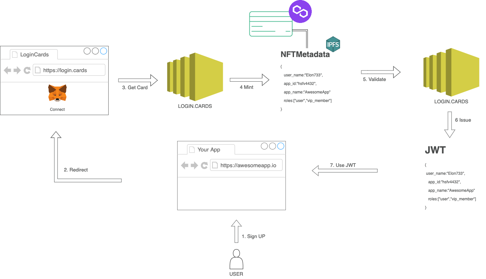

How it works
- User put "Sign up button" on your app
- App redirecs user to the trusted.cards login page
- User connects his wallet. login.cards creates new user and ask him sign some one time nonce. If user does not have login.card nft for your app we will mint it for user.
- Login.card mint token in the Polygon chain and store metadata on the IPFS. Transaction fee for the mint optional - from users or app account wallet
- Eatch login login.cards change NFT owner
- And issue JWT ID/Reflash token where custom claims mapped from the NFT
- Your app can use JWT and validate signature via JWKS url